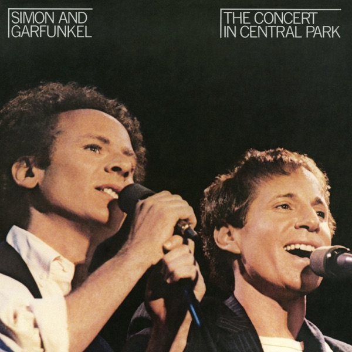

The Concert In Central Park
Simon & Garfunkel
Upgrade idea: This original Sterling Sound-mastered pressing is excellent. No audiophile reissue of this title has been issued — this original is the one to keep.
- Original release
- 1982
- Pressing year
- 1982
- Country
- US
- Format
- 2× Vinyl LP, Album
- Label / Cat#
- Warner Bros. Records – 2BSK 3654
- Genres
- Rock
- Styles
- Folk Rock
- Discogs release
- 6460563
- Discogs master
- 27817
- Apple Music
- The Concert In Central Park (Live)
- Wikipedia
- The Concert In Central Park
Production notes
Tracklist (Discogs)
| A1 | Mrs. Robinson | 3:01 |
| A2 | Homeward Bound | 3:07 |
| A3 | America | 4:33 |
| A4 | Me And Julio Down By The Schoolyard | 3:09 |
| A5 | Scarborough Fair | 3:34 |
| B1 | April Come She Will | 2:18 |
| B2 | Wake Up Little Susie | 2:13 |
| B3 | Still Crazy After All These Years | 3:25 |
| B4 | American Tune | 4:11 |
| B5 | Late In The Evening | 3:57 |
| C1 | Slip Slidin' Away | 4:32 |
| C2 | A Heart In New York | 2:23 |
| C3 | Kodachrome / Mabellene | 5:39 |
| C4 | Bridge Over Troubled Water | 4:35 |
| D1 | Fifty Ways To Leave Your Lover | 4:13 |
| D2 | The Boxer | 4:45 |
| D3 | Old Friends | 2:46 |
| D4 | The 59th Street Bridge Song (Feelin' Groovy) | 1:53 |
| D5 | The Sounds Of Silence | 3:50 |
Tracklist (Apple Music)
| 1 | Mrs. Robinson (Live) | 4:03 |
| 2 | Homeward Bound (Live) | 4:22 |
| 3 | America (Live) | 4:56 |
| 4 | Me and Julio Down By the Schoolyard (Live) | 3:47 |
| 5 | Scarborough Fair / Canticle (Live) | 3:51 |
| 6 | April Come She Will (Live) | 2:37 |
| 7 | Wake Up Little Susie (Live) | 2:18 |
| 8 | Still Crazy After All These Years (Live) | 3:53 |
| 9 | American Tune (Live) | 4:35 |
| 10 | Late In the Evening (Live) | 4:07 |
| 11 | Slip Slidin' Away (Live) | 4:42 |
| 12 | A Heart In New York (Live) | 3:01 |
| 13 | Kodachrome / Mabellene (Live) | 5:49 |
| 14 | Bridge Over Troubled Water (Live) | 4:44 |
| 15 | 50 Ways to Leave Your Lover (Live) | 4:49 |
| 16 | The Boxer (Live) | 6:02 |
| 17 | Old Friends / Bookends Theme (Live) | 2:50 |
| 18 | The 59th Street Bridge Song (Feelin' Groovy) [Live] | 3:11 |
| 19 | The Sound of Silence (Live) | 4:16 |
Personnel & credits
- Dave Grusin — Arranged By
- Dave Matthews (3) — Arranged By
- Anthony Jackson — Bass
- Grady Tate — Drums
- Steve Gadd — Drums
- Roy Halee — Engineer, Mixed By
- Roy Halee — Engineer, Remix
- David Brown (6) — Guitar
- Pete Carr — Guitar
- Richard Tee — Keyboards
- Greg Calbi — Mastered By
- Broadway Video — Photography By
- Harrison Funk — Photography By
- Lynn Goldsmith — Photography By
- Phil Ramone — Producer
- Roy Halee — Producer
- Paul Simon — Producer, Arranged By, Vocals, Guitar
- Art Garfunkel — Producer, Vocals, Arranged By
- Kenneth Topolsky — Production Manager
- Dave Tofani — Saxophone
- Gerry Niewood — Saxophone
- Rob Mounsey — Synthesizer
- John Eckert — Trumpet
- John Gatchell — Trumpet
Identifiers
- Barcode: 07599-23654-1
- Matrix / Runout: 2BSK·1·3654-S2-RE1 + SLM++ △1156 (Runout A)
- Matrix / Runout: 2BSK·2·3654-S2-RE1+ SLM + △1156-X (Runout B)
- Matrix / Runout: 2BSK 3 3654-S1-RE1+ SLM++ △1157 (Runout C)
- Matrix / Runout: 2BSK·4·3654-S2-RE1 + SLM + △1157-X (Runout D)
- Rights Society: BMI
Notes
Recorded live in Central Park, New York City, September 19, 1981.
Remixed at Soundmixers Studios.
Notes & discrepancies
- Total runtime differs by 589s (Discogs=4084s, Apple Music=4673s) — likely a different master/remaster.
Simon & Garfunkel’s legendary 1981 Central Park reunion concert — 500,000 people, one of the great live albums of the era. Original 1982 Warner Bros. pressing (2BSK 3654), mastered at Sterling Sound (SLM stamper). Warner Bros. gun logo in deadwax. Matrix 2BSK·1·3654-S2-RE1 SLM △1156.